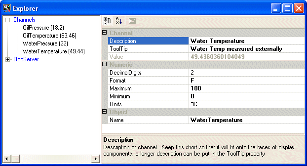

A channel is a KineticaRT object which has a name and a value. There are various types of channel including:
The lists of channels used in a KineticaRT Studio project are stored in channel files. There can be any number of channel files in a project. The channel files to be used in the project are configured from the main menu / Channels menu. See Configuring Projects for more details.
Once a channel file is included in the project then the channels in that file can be viewed in the channel Explorer window:

Each channels file is shown in the tree view on the left side of the window with each of its channels shown underneath when expanded.
When a channel is selected from the tree, its properties are shown in the right hand property display. An explanation of the selected property is shown at the bottom right.
Most of the properties can be modified by typing the new values into the property display. To make the changes persistent, you must save the channel file containing the changed channel; this can be done either from the main menu / Channels or from the right click menu on the channel file in the explorer tree.
The explorer menu can be displayed by right clicking on the channel tree in the explorer window. It has the following menu options:
This option controls whether the properties area is shown in the explorer window.
This connects the selected channel or, if a channel file is selected then all channels in that file are connected.
For example, if an OpcClient channel is connected, it will start receiving data from the OPC Server.
This disconnects the selected channel or, if a channel file is selected then all channels in that file are disconnected.
For example, if an OpcClient channel is disconnected, it will stop receiving data from the OPC Server and disconnect the link to the server.
This will add a channel to the selected channel file.
The list of channels which can be added is configured in the Project File.
The channel file must be saved for this change to be persistent.
This will copy the selected channel to the clipboard.
If a channel has been copied to the clipboard then this will paste a copy of the channel into the selected channel file.
The channel file must be saved for this change to be persistent.
This deletes the selected channel.
The channel file must be saved for this change to be persistent.
This controls whether the explorer window is always displayed on top of other windows or not.